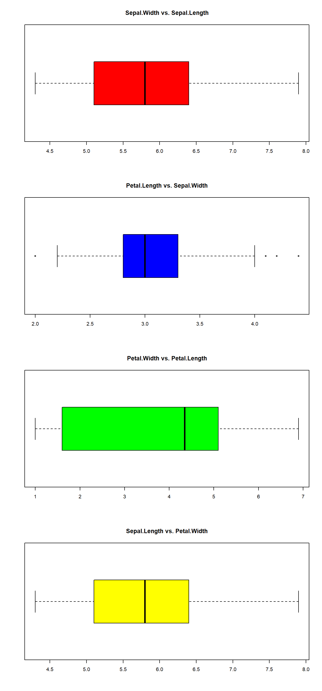
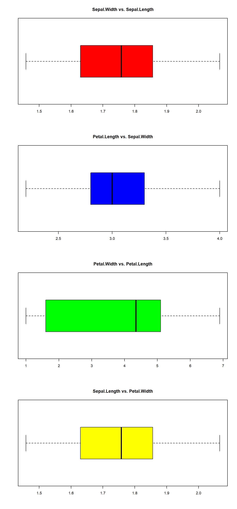

Linear Discriminant Analysis (LDA)
This is a method of supervised multivariant classification and it is one of the most powerful tool a data analyst have. With this method we can look for the significance of the variables and we can make predictions. To make this model we need an explanatory matrix X and a response matrix Y. We will use the iris database as example.
Iris
| Sepal.Length | Sepal.Width | Petal.Length | Petal.Width | Species |
|---|---|---|---|---|
| 5.1 | 3.5 | 1.4 | 0.2 | setosa |
| 4.9 | 3.0 | 1.4 | 0.2 | setosa |
| 4.7 | 3.2 | 1.3 | 0.2 | setosa |
| 4.6 | 3.1 | 1.5 | 0.2 | setosa |
| 5.0 | 3.6 | 1.4 | 0.2 | setosa |
1- Standarization and exploration
iris.hle <- decostand(as.matrix(iris[1:4]), "hellinger")
gr <- cutree(hclust(vegdist(iris.hle, "euc"), "ward.D"), 3)
table(gr)## gr
## 1 2 3
## 50 48 52We used k = 3 groups, as the theory suggests. The model classified the data in 3 gropus of similar size.
2- Assumptions check
The LDA model is a parametric model, so there are assumptions to check and control.
###2.1. NA values
any(is.na(iris))## [1] FALSEThere are not any NA value.
###2.2. Multivariant homogeneity
iris.pars <- as.matrix(iris[, 1:4])
iris.pars.d <- dist(iris.pars)
(iris.MHV <- betadisper(iris.pars.d, gr))##
## Homogeneity of multivariate dispersions
##
## Call: betadisper(d = iris.pars.d, group = gr)
##
## No. of Positive Eigenvalues: 4
## No. of Negative Eigenvalues: 0
##
## Average distance to median:
## 1 2 3
## 0.4814 0.6990 0.8190
##
## Eigenvalues for PCoA axes:
## PCoA1 PCoA2 PCoA3 PCoA4
## 630.008 36.158 11.653 3.551anova(iris.MHV)## Analysis of Variance Table
##
## Response: Distances
## Df Sum Sq Mean Sq F value Pr(>F)
## Groups 2 2.9735 1.4867 10.884 3.909e-05 ***
## Residuals 147 20.0803 0.1366
## ---
## Signif. codes: 0 '***' 0.001 '**' 0.01 '*' 0.05 '.' 0.1 ' ' 1permutest(iris.MHV)##
## Permutation test for homogeneity of multivariate dispersions
## Permutation: free
## Number of permutations: 999
##
## Response: Distances
## Df Sum Sq Mean Sq F N.Perm Pr(>F)
## Groups 2 2.9735 1.4867 10.884 999 0.001 ***
## Residuals 147 20.0803 0.1366
## ---
## Signif. codes: 0 '***' 0.001 '**' 0.01 '*' 0.05 '.' 0.1 ' ' 1We can not accept the homogeneity assumption. We try to transform the data eliminating outlier values.

skewness(iris[1:4])## Sepal.Length Sepal.Width Petal.Length Petal.Width
## 0.3086407 0.3126147 -0.2694109 -0.1009166outliers::outlier(iris[2])## Sepal.Width
## 4.4which(iris[2] >= 4.1 | iris[2] < 2.2) ## [1] 16 33 34 61iris[c(16, 33, 34, 61), 2] <- mean(iris[,2])
iris2 <- cbind(log(iris[1]), iris[2], iris[3], iris[4])
skewness(iris2[1:4])## Sepal.Length Sepal.Width Petal.Length Petal.Width
## 0.04272597 0.12722662 -0.26941093 -0.10091657
The two first variables are skewed to the right and the third one is skewed to the left.
iris.pars2 <- as.matrix(iris2)
iris.pars.d2 <- dist(iris.pars2)
(iris.MHV2 <- betadisper(iris.pars.d2, gr))##
## Homogeneity of multivariate dispersions
##
## Call: betadisper(d = iris.pars.d2, group = gr)
##
## No. of Positive Eigenvalues: 4
## No. of Negative Eigenvalues: 0
##
## Average distance to median:
## 1 2 3
## 0.3401 0.5081 0.6266
##
## Eigenvalues for PCoA axes:
## PCoA1 PCoA2 PCoA3 PCoA4
## 551.4433 19.7877 5.1255 0.4618anova(iris.MHV2)## Analysis of Variance Table
##
## Response: Distances
## Df Sum Sq Mean Sq F value Pr(>F)
## Groups 2 2.1079 1.05394 14.288 2.137e-06 ***
## Residuals 147 10.8436 0.07377
## ---
## Signif. codes: 0 '***' 0.001 '**' 0.01 '*' 0.05 '.' 0.1 ' ' 1permutest(iris.MHV2)##
## Permutation test for homogeneity of multivariate dispersions
## Permutation: free
## Number of permutations: 999
##
## Response: Distances
## Df Sum Sq Mean Sq F N.Perm Pr(>F)
## Groups 2 2.1079 1.05394 14.288 999 0.001 ***
## Residuals 147 10.8436 0.07377
## ---
## Signif. codes: 0 '***' 0.001 '**' 0.01 '*' 0.05 '.' 0.1 ' ' 1We can not accept the homogeneity of the sample even after transforming the data. In this case we should make a non-parametric model like a Quadratic Discriminant Analysis (QDA).
###2.3. Normality
par(mfrow = c(1, ncol(iris.pars2)))
for(j in 1:ncol(iris.pars2)){
hist(iris.pars2[,j])}mshapiro.test(t(iris.pars2))##
## Shapiro-Wilk normality test
##
## data: Z
## W = 0.97503, p-value = 0.007804We can not accept the normality assumption too, due to the third and forth variables anormality.
###2.4. Multicollinearity
as.dist(cor(iris.pars2))## Sepal.Length Sepal.Width Petal.Length
## Sepal.Width -0.1377389
## Petal.Length 0.8786347 -0.4001647
## Petal.Width 0.8281772 -0.3359133 0.9628654faraway::vif(iris.pars2)## Sepal.Length Sepal.Width Petal.Length Petal.Width
## 6.236970 1.729705 27.477004 15.465980There is one problem of multicollinearity between Petal.Length - Petal.Width. We will continue our analysis without the Petal.Length variable to improve the output.
iris.pars3 <- iris.pars[, -3]###2.5. Linearity
psych::pairs.panels(iris[1:4], gap = 0, bg = c("red", "blue", "green")[iris$Species], pch = 21)There are some non-linear relationships. We should try a KDA or K-mDA model instead. We will continue with our LDA model in light of example.
##3- LDA model
iris.pars3.df <- as.data.frame(iris.pars3)
(iris.lda <- lda(gr ~ Sepal.Length + Sepal.Width + Petal.Width, data = iris.pars3.df))## Call:
## lda(gr ~ Sepal.Length + Sepal.Width + Petal.Width, data = iris.pars3.df)
##
## Prior probabilities of groups:
## 1 2 3
## 0.3333333 0.3200000 0.3466667
##
## Group means:
## Sepal.Length Sepal.Width Petal.Width
## 1 5.006000 3.428000 0.246000
## 2 5.927083 2.777083 1.316667
## 3 6.571154 2.959615 2.007692
##
## Coefficients of linear discriminants:
## LD1 LD2
## Sepal.Length 0.6532649 -0.659779
## Sepal.Width -2.4718234 2.819200
## Petal.Width 4.9757063 1.464479
##
## Proportion of trace:
## LD1 LD2
## 0.9896 0.0104iris.lda$count## 1 2 3
## 50 48 52The formula of the model will be: - \(LD1 = 0.653 * Sepal.Length - 2.471 * Sepal.Width + 4.975 * Petal.Width\) - \(LD2 = -0.659 * Sepal.Length + 2.819 * Sepal.Width + 1.464 * Petal.Width\)
The proporton of trace indicates that with just one LD we achive up to a 99% of discimination.
Copyright © 2019 David Valls Lanaquera All rights reserved